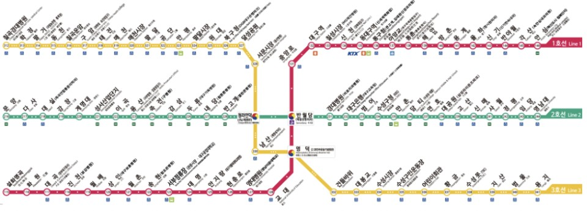
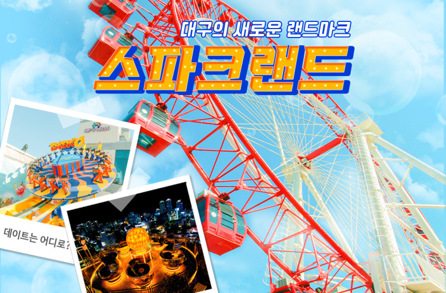
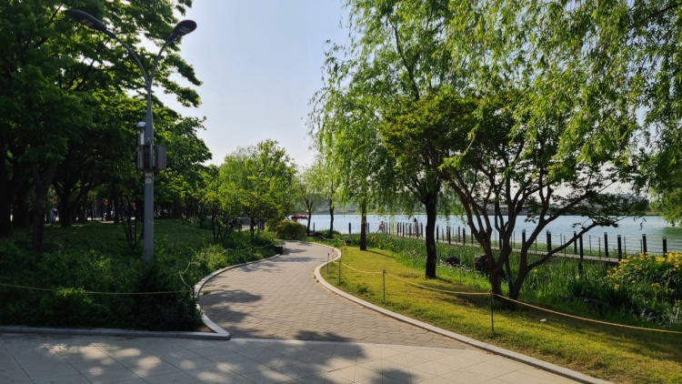
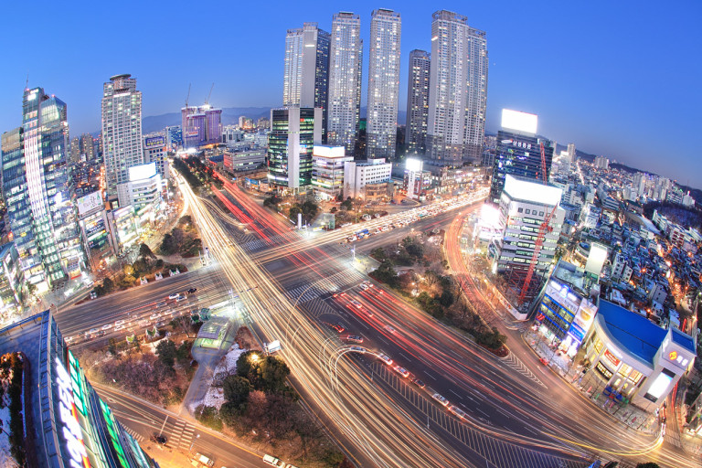

중구 : 교동
1. 대구의 중심, 동성로가 위치한 만큼 위치적으로 동성로를 여행하기에 매우 쉽다
2. 버스와 지하철역이 많아 다른 지역으로 이동하기에 유리하다
3. 근대문화골목, 스파크랜드, 김광석길 등 다양한 분위기의 명소들이 가까이 있는 곳이다.
Jung-gu Gyo-dong
1. It is so appropriate for a traveler who want to spend time on dongseongno cause it is located near it
2. It is easy to move to other location of the city cause the bus/subway station is well developed in this town
3. There are some various kinds of tourist attraction which have different style like modern culture alley



수성구 : 범어동, 두산동
1. 중/고등학교와 학원가들이 밀집한 동네인 만큼 치안이 매우 안전하다
2. 역시 대중교통이 발달하여 이동성이 좋은 곳이다
3. 교육 중심 동네라 관광요소들이 없다고 생각하면 오산, 범어네거리의 도시적인 분위기와 수성못의 아름다움 등 여러 모습이 공존하는 곳이다
Susueong-gu
1. This is a very secure location with many private academies and schools located
2. Also the place which has very good accessibility with well-developed mass transportation
3. Don't say that this is a tedious or monotonous place due to the educational character, focus on the various attractions like suseong-mot and beomeo-4-way-intersection

